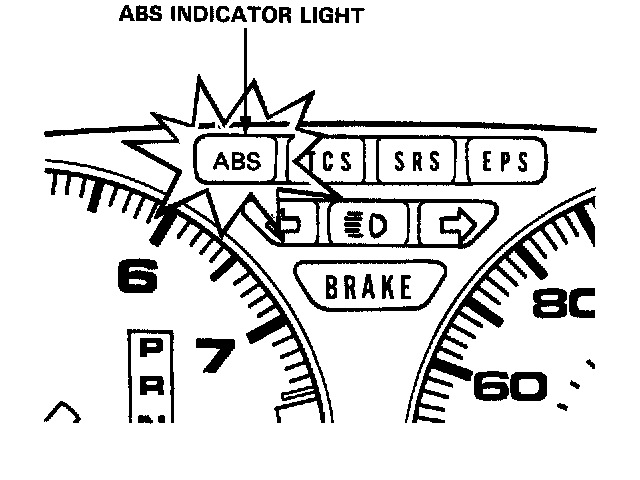
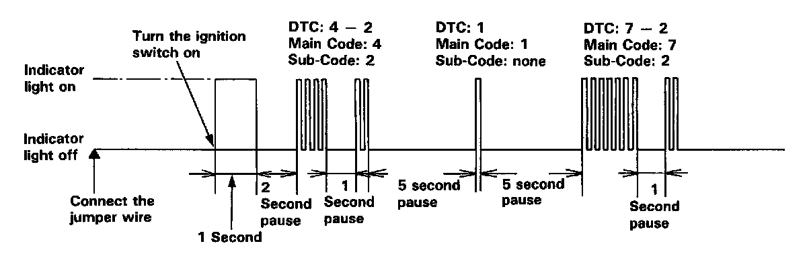

Displaying & Reading Trouble Codes
1. Stop the engine.
2. Disconnect the service check connector from the connector cover located under the glove box. Connect the two terminals of the service check connector with a jumper wire.
3. Turn the ignition switch on, but do not start the engine.

4. Record the blinking frequency of the ABS indicator light.
Note: The blinking frequency indicates the diagnostic trouble code (DTC).
CAUTION: Before starting the engine, disconnect the jumper wire from the service check connector, or else the Malfunction Indicator Lamp (MIL) will stay on with the engine running.
NOTE:
- The ABS control unit can indicate three DTC (one, two or three problems).
- If the ABS indicator light does not light, see Troubleshooting of ABS Indicator Light Circuit.
Description of On-Board Diagnostics
- If you miscount the blinking frequency, turn the ignition switch off, then turn on to blink the ABS indicator light again.
- After the repair is completed, disconnect the ABS 2.3 (20A) fuse for at least 3 seconds to erase the ABS control unit's memory. Then turn the ignition key on again and recheck.
- The memory is erased, if the connector is disconnected from the ABS control unit or the ABS control unit is removed from the body.
- After recording the main and sub-code (if applicable), refer to the Symptom-to-System Chart.